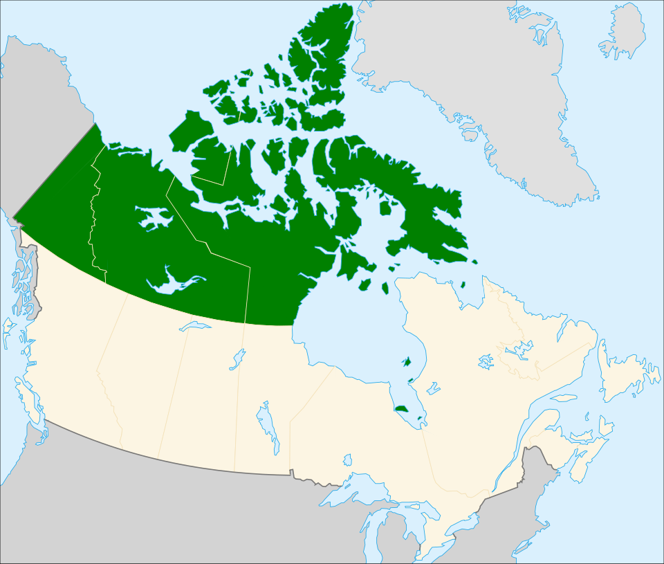
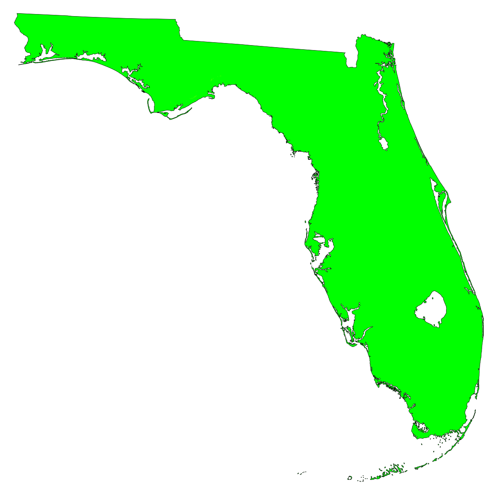
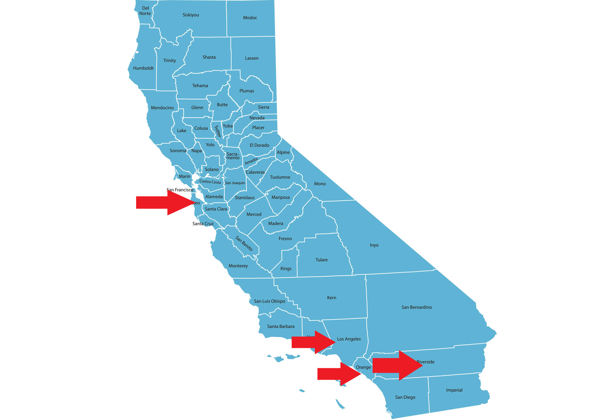
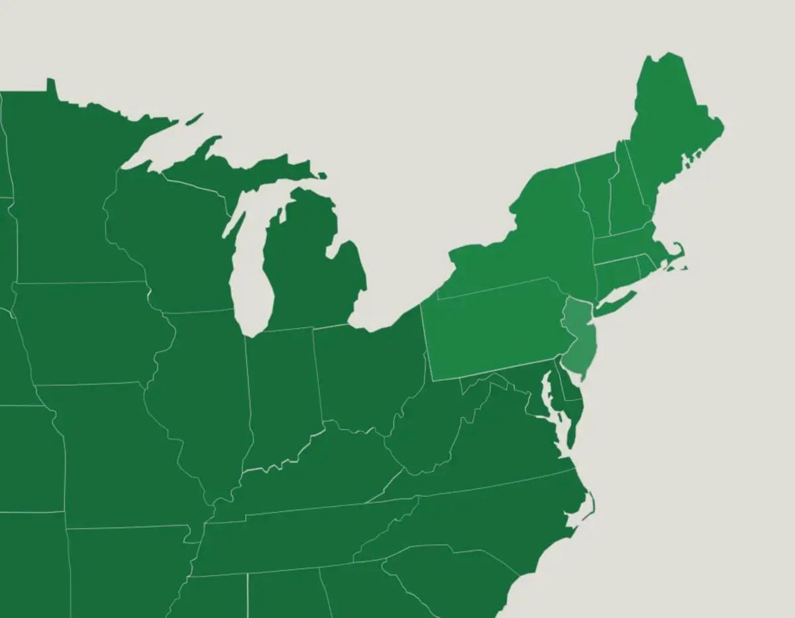

Эти пернатые живут в различных местах – лиственных лесах, садах, парках, жилых районах. Они отдают предпочтение буковым и дубовым лесам. В западной части ареала голубые сойки любят селиться в сосновых лесах и среди кустарниковых зарослей.
Восточная Канада |
||
| Преобладают лиственные леса |  | Высокое количество особей голубых соек |
| Подробнее об экосистеме | ||
Флорида |
||
| Преобладают сосняки |  | Умеренное количество особей голубых соек |
| Подробнее об экосистеме | ||
Южная Калифорния |
||
| Преобладают скалистые горы |  | Голубые сойки встречаются редко |
| Подробнее об экосистеме | ||
Северо-восточные штаты |
||
| Преобладают смешанные леса |  | Очень высокое количество особей голубых соек |
| Подробнее об экосистеме | ||
Ареал голубой сойки простирается от востока США и юга Канады до Мексиканского залива. По-английски эта птица называется Blue Jay. Голубая сойка является перелётной птицей лишь отчасти: перелёт на юг в зимнее время совершают только северные популяции. Изначально, будучи обитательницей лиственных лесов, голубая сойка зимой встречается и в культивированных местностях, в деревнях, парках и пригородах. В западной части Северной Америки распространена только её близкая родственница, стеллерова черноголовая голубая сойка.
Голубая сойка является представителем семейства врановых. Это певчие птицы. Живут они на территории Северной Америки: в Канаде, США и Британкой Колумбии.
Голубых соек еще называют хохлатыми сойками, синими сойками и североамериканскими сойками.